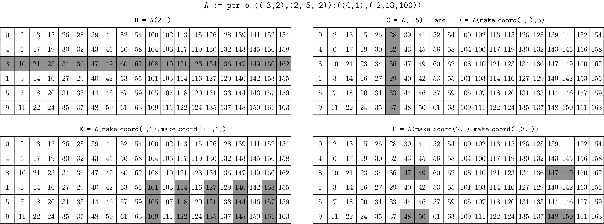
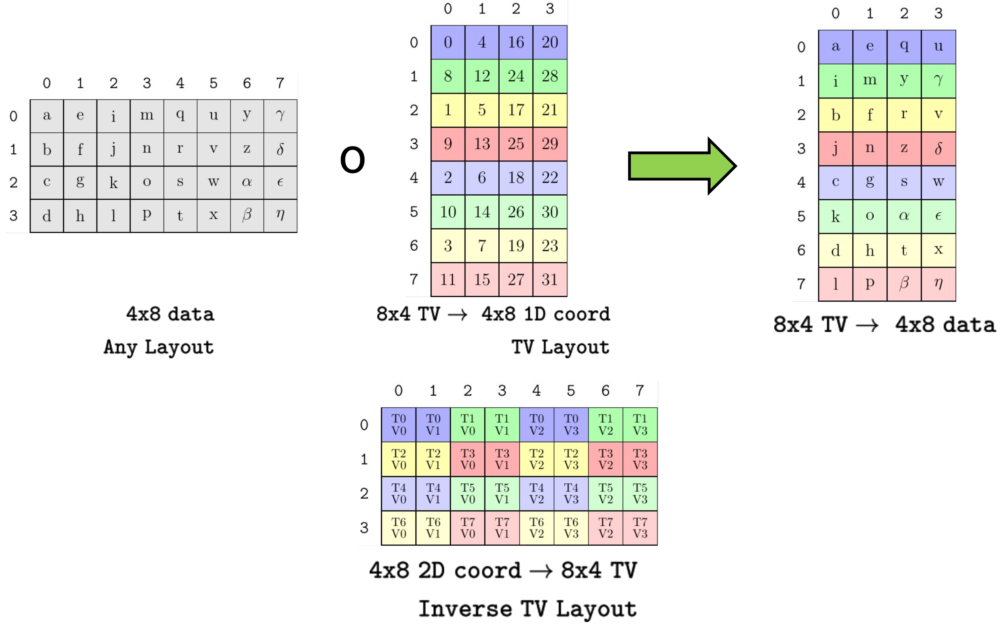

CuTe Tensors#
This document describes Tensor, CuTe’s core container that deploys the Layout concepts previously described.
Fundamentally, a Tensor represents a multidimensional array. Tensors abstracts away the details of how the array’s elements are organized and how the array’s elements are stored. This lets users write algorithms that access multidimensional arrays generically and potentially specialize algorithms on a Tensors traits. For example, the rank of the Tensor can be dispatched against, the Layout of data can be inspected, and the type of data can be verified.
A Tensor is represented by two template parameters: Engine and Layout.
For a description of Layout, please refer to the Layout section.
The Tensor presents the same shape and access operators as the Layout and uses the result of the Layout computation to
offset and dereference a random-access iterator held by the Engine.
That is, the layout of the data is provided by Layout and the actual data is provided by the iterator. Such data can live in any kind of memory – global memory, shared memory, register memory – or can even be transformed or generated on the fly.
Fundamental operations#
CuTe Tensor provides container-like operations for accessing elements.
.data(). The iterator thisTensorholds..size(). The total logical size of thisTensor..operator[](Coord). Access the element corresponding to the logical coordinateCoord..operator()(Coord). Access the element corresponding to the logical coordinateCoord..operator()(Coords...). Access the element corresponding to the logical coordinatemake_coord(Coords...).
CuTe Tensor provides a similar core of hierarchical operations as Layout.
rank<I...>(Tensor). The rank of theI...th mode of theTensor.depth<I...>(Tensor). The depth of theI...th mode of theTensor.shape<I...>(Tensor). The shape of theI...th mode of theTensor.size<I...>(Tensor). The size of theI...th mode of theTensor.layout<I...>(Tensor). The layout of theI...th mode of theTensor.tensor<I...>(Tensor). The subtensor corresponding to the theI...th mode of theTensor.
Tensor Engines#
The Engine concept is a wrapper for an iterator or array of data.
It uses a stripped-down interface of std::array to present the iterator.
using iterator = // The iterator type
using value_type = // The iterator value-type
using reference = // The iterator reference-type
iterator begin() // The iterator
In general, users do not need to construct Engines on their own. When a Tensor is constructed,
the appropriate engine – often ArrayEngine<T,N>, ViewEngine<Iter>, or
ConstViewEngine<Iter> – will be constructed.
Tagged Iterators#
Any random-access iterator can be used to construct a Tensor, but
users can also “tag” any iterator with a memory space –
e.g., to indicate this iterator is accessing global memory or shared memory.
This is done by calling make_gmem_ptr(g) or make_gmem_ptr<T>(g) to tag g as a global memory iterator,
and make_smem_ptr(s) or make_smem_ptr<T>(s) to tag s as a shared memory iterator.
Tagging memory makes it possible for CuTe’s Tensor algorithms
to use the fastest implementation for the specific kind(s) of memory.
When calling very specific operations with Tensors, it also allows those
operators to verify the tags against what is expected.
For example, some kinds of optimized copy operations require
the source of the copy to be global memory
and the destination of the copy to be shared memory.
Tagging makes it possible for CuTe to dispatch
to those copy operations and/or verify against those copy operations.
Tensor Creation#
Tensors can be constructed as owning or nonowning.
“Owning” Tensors behave like std::array.
When you copy the Tensor, you (deep-)copy its elements,
and the Tensor’s destructor deallocates the array of elements.
“Nonowning” Tensor’s behave like a (raw) pointer.
Copying the Tensor doesn’t copy the elements,
and destroying the Tensor doesn’t deallocate the array of elements.
This has implications for developers of generic Tensor algorithms.
For example, input Tensor parameters of a function
should be passed by referece or const reference,
because passing a Tensor by value
may or may not make a deep copy of the Tensor’s elements.
Nonowning Tensors#
A Tensor is usually a nonowning view of existing memory.
Nonowning Tensors are created by calling make_tensor
with two arguments: a random-access iterator, and the Layout or arguments to construct a Layout.
Here are some examples of creating Tensors
that are nonowning views of existing memory.
float* A = ...;
// Untagged pointers
Tensor tensor_8 = make_tensor(A, make_layout(Int<8>{})); // Construct with Layout
Tensor tensor_8s = make_tensor(A, Int<8>{}); // Construct with Shape
Tensor tensor_8d2 = make_tensor(A, 8, 2); // Construct with Shape and Stride
// Global memory (static or dynamic layouts)
Tensor gmem_8s = make_tensor(make_gmem_ptr(A), Int<8>{});
Tensor gmem_8d = make_tensor(make_gmem_ptr(A), 8);
Tensor gmem_8sx16d = make_tensor(make_gmem_ptr(A), make_shape(Int<8>{},16));
Tensor gmem_8dx16s = make_tensor(make_gmem_ptr(A), make_shape ( 8 ,Int<16>{}),
make_stride(Int<16>{},Int< 1>{}));
// Shared memory (static or dynamic layouts)
Layout smem_layout = make_layout(make_shape(Int<4>{},Int<8>{}));
__shared__ float smem[decltype(cosize(smem_layout))::value]; // (static-only allocation)
Tensor smem_4x8_col = make_tensor(make_smem_ptr(smem), smem_layout);
Tensor smem_4x8_row = make_tensor(make_smem_ptr(smem), shape(smem_layout), LayoutRight{});
As shown, users wrap the pointer by identifying its memory space:
e.g., global memory (via make_gmem_ptr or make_gmem_ptr<T>) or shared memory (via make_smem_ptr or make_smem_ptr<T>).
Tensors that view existing memory can have either static or dynamic Layouts.
Calling print on all of the above tensors displays
tensor_8 : ptr[32b](0x7f42efc00000) o _8:_1
tensor_8s : ptr[32b](0x7f42efc00000) o _8:_1
tensor_8d2 : ptr[32b](0x7f42efc00000) o 8:2
gmem_8s : gmem_ptr[32b](0x7f42efc00000) o _8:_1
gmem_8d : gmem_ptr[32b](0x7f42efc00000) o 8:_1
gmem_8sx16d : gmem_ptr[32b](0x7f42efc00000) o (_8,16):(_1,_8)
gmem_8dx16s : gmem_ptr[32b](0x7f42efc00000) o (8,_16):(_16,_1)
smem_4x8_col : smem_ptr[32b](0x7f4316000000) o (_4,_8):(_1,_4)
smem_4x8_row : smem_ptr[32b](0x7f4316000000) o (_4,_8):(_8,_1)
which displays the pointer type along with any memory space tags, the pointer’s value_type width, the raw pointer address, and the associated Layout.
Owning Tensors#
A Tensor can also be an owning array of memory.
Owning Tensors are created by calling make_tensor<T>,
where T is the type of each element of the array, and
a Layout or arguments to construct a Layout.
The array is allocated analogously to std::array<T,N> and, therefore, owning Tensors must be constructed with a Layout that has static shapes and static strides.
CuTe does not perform dynamic memory allocation in Tensors as it is not a common or performant operation within CUDA kernels.
Here are some examples of creating owning Tensors.
// Register memory (static layouts only)
Tensor rmem_4x8_col = make_tensor<float>(Shape<_4,_8>{});
Tensor rmem_4x8_row = make_tensor<float>(Shape<_4,_8>{},
LayoutRight{});
Tensor rmem_4x8_pad = make_tensor<float>(Shape <_4, _8>{},
Stride<_32,_2>{});
Tensor rmem_4x8_like = make_tensor_like(rmem_4x8_pad);
The make_tensor_like function makes an owning Tensor of register memory with the same value type and shape as its input Tensor argument and attempts to use the same order of strides as well.
Calling print on each of the above tensors produces similar output
rmem_4x8_col : ptr[32b](0x7fff48929460) o (_4,_8):(_1,_4)
rmem_4x8_row : ptr[32b](0x7fff489294e0) o (_4,_8):(_8,_1)
rmem_4x8_pad : ptr[32b](0x7fff489295e0) o (_4,_8):(_32,_2)
rmem_4x8_like : ptr[32b](0x7fff48929560) o (_4,_8):(_8,_1)
and we can see that each pointer address is unique indicating that each Tensor is a unique array-like allocation.
Accessing a Tensor#
Users can access the elements of a Tensor via operator() and operator[],
which take IntTuples of logical coordinates.
When users access a Tensor,
the Tensor uses its Layout to map the logical coordinate
to an offset that can be accessed by the iterator.
You can see this in Tensor’s implementation of operator[].
template <class Coord>
decltype(auto) operator[](Coord const& coord) {
return data()[layout()(coord)];
}
For example, we can read and write to Tensors using natural coordinates, using the variadic operator(), or the container-like operator[].
Tensor A = make_tensor<float>(Shape <Shape < _4,_5>,Int<13>>{},
Stride<Stride<_12,_1>, _64>{});
float* b_ptr = ...;
Tensor B = make_tensor(b_ptr, make_shape(13, 20));
// Fill A via natural coordinates op[]
for (int m0 = 0; m0 < size<0,0>(A); ++m0)
for (int m1 = 0; m1 < size<0,1>(A); ++m1)
for (int n = 0; n < size<1>(A); ++n)
A[make_coord(make_coord(m0,m1),n)] = n + 2 * m0;
// Transpose A into B using variadic op()
for (int m = 0; m < size<0>(A); ++m)
for (int n = 0; n < size<1>(A); ++n)
B(n,m) = A(m,n);
// Copy B to A as if they are arrays
for (int i = 0; i < A.size(); ++i)
A[i] = B[i];
Tiling a Tensor#
Many of the Layout algebra operations can also be applied to Tensor.
composition(Tensor, Tiler)
logical_divide(Tensor, Tiler)
zipped_divide(Tensor, Tiler)
tiled_divide(Tensor, Tiler)
flat_divide(Tensor, Tiler)
The above operations allows arbitrary subtensors to be “factored out” of Tensors. This very commonly used in tiling for threadgroups, tiling for MMAs, and reodering tiles of data for threads.
Note that the _product operations are not implemented for Tensors as those would
often produce layouts with increased codomain sizes, which means the Tensor would
require accessing elements unpredictably far outside its previous bounds. Layouts can be
used in products, but not Tensors.
Slicing a Tensor#
Whereas accessing a Tensor with a coordinate will return an element of that tensor,
slicing a Tensor will return a subtensor of all the elements in the sliced mode(s).
Slices are performed through the same operator()
that are used for accessing an individual element.
Passing in _ (the underscore character, an instance of the cute::Underscore type)
has the same effect as : (the colon character) in Fortran or Matlab:
retain that mode of the tensor as if no coordinate had been used.
Slicing a tensor performs two operations,
the
Layoutis evaluated on the partial coordinate and the resulting offset is accumulated into the iterator – the new iterator points to the start of the new tensor.the
Layoutmodes cooresponding to_-elements of the coordinate are used to construct a new layout. Together, the new iterator and the new layout construct the new tensor.
// ((_3,2),(2,_5,_2)):((4,1),(_2,13,100))
Tensor A = make_tensor(ptr, make_shape (make_shape (Int<3>{},2), make_shape ( 2,Int<5>{},Int<2>{})),
make_stride(make_stride( 4,1), make_stride(Int<2>{}, 13, 100)));
// ((2,_5,_2)):((_2,13,100))
Tensor B = A(2,_);
// ((_3,_2)):((4,1))
Tensor C = A(_,5);
// (_3,2):(4,1)
Tensor D = A(make_coord(_,_),5);
// (_3,_5):(4,13)
Tensor E = A(make_coord(_,1),make_coord(0,_,1));
// (2,2,_2):(1,_2,100)
Tensor F = A(make_coord(2,_),make_coord(_,3,_));

In the image above, a Tensor is sliced in various ways and the subtensors generated by those slices are highlighted within the original tensor. Note that tensor C and D contain the same elements, but have different ranks and shapes due to the use of _ versus the use of make_coord(_,_). In each case, the rank of the result is equal to the number of Underscores in the slicing coordinate.
Partitioning a Tensor#
To implement generic partitioning of a Tensor, we apply composition or tiling followed by a slicing. This can be performed in many ways, but we have found three ways that are particularly useful: inner-partitioning, outer-partitioning, and TV-layout-partitioning.
Inner and outer partitioning#
Let’s take a tiled example and look at how we can slice it in useful ways.
Tensor A = make_tensor(ptr, make_shape(8,24)); // (8,24)
auto tiler = Shape<_4,_8>{}; // (_4,_8)
Tensor tiled_a = zipped_divide(A, tiler); // ((_4,_8),(2,3))
Suppose that we want to give each threadgroup one of these 4x8 tiles of data. Then we can use our threadgroup coordinate to index into the second mode.
Tensor cta_a = tiled_a(make_coord(_,_), make_coord(blockIdx.x, blockIdx.y)); // (_4,_8)
We call this an inner-partition because it keeps the inner “tile” mode. This pattern of applying a tiler and then slicing out that tile by indexing into the remainder mode is common and has been wrapped into its own function inner_partition(Tensor, Tiler, Coord). You’ll often see local_tile(Tensor, Tiler, Coord) which is just another name for inner_partition. The local_tile partitioner is very often applied at the threadgroup level to partition tensors into tiles across threadgroups.
Alternatively, suppose that we have 32 threads and want to give each thread one element of these 4x8 tiles of data. Then we can use our thread to index into the first mode.
Tensor thr_a = tiled_a(threadIdx.x, make_coord(_,_)); // (2,3)
We call this an outer-partition because it keeps the outer “rest” mode. This pattern of applying a tiler and then slicing into that tile by indexing into the tile mode is common and has been wrapped into its own function outer_partition(Tensor, Tiler, Coord). Sometimes you’ll see local_partition(Tensor, Layout, Idx), which is a rank-sensitive wrapper around outer_partition that transforms the Idx into a Coord using the inverse of the Layout and then constructs a Tiler with the same top-level shape of the Layout. This allows the user to ask for a row-major, column-major, or arbitrary layout of threads with a given shape that can be used to partition into a tensor.
To see how these partitioning patterns are used, see the introductory GEMM tutorial.
Thread-Value partitioning#
Another common partitioning strategy is called a thread-value partitioning. In this pattern, we construct a Layout that represents the mapping of all threads (or any parallel agent) and all values that each thread will receive to coordinates of the target data. With composition the target data layout is transformed according to our TV-layout and then we can simply slice into the thread-mode of the result with our thread index.
// Construct a TV-layout that maps 8 thread indices and 4 value indices
// to 1D coordinates within a 4x8 tensor
// (T8,V4) -> (M4,N8)
auto tv_layout = Layout<Shape <Shape <_2,_4>,Shape <_2, _2>>,
Stride<Stride<_8,_1>,Stride<_4,_16>>>{}; // (8,4)
// Construct a 4x8 tensor with any layout
Tensor A = make_tensor<float>(Shape<_4,_8>{}, LayoutRight{}); // (4,8)
// Compose A with the tv_layout to transform its shape and order
Tensor tv = composition(A, tv_layout); // (8,4)
// Slice so each thread has 4 values in the shape and order that the tv_layout prescribes
Tensor v = tv(threadIdx.x, _); // (4)

The above image is a visual representation of the above code. An arbitrary 4x8 layout of data is composed with a specific 8x4 TV-layout that represents a partitioning pattern. The result of the composition is on the right where each threads’ values are arranged across each row. The bottom layout depicts the inverse TV layout which shows the mapping of 4x8 logical coordinates to the thread id and value id they will be mapped to.
To see how these partitioning patterns are constructed and used, see the tutorial on building MMA Traits.
Examples#
Copy a subtile from global memory to registers#
The following example copies rows of a matrix (with any Layout)
from global memory to register memory,
then executes some algorithm do_something
on the row that lives in register memory.
Tensor gmem = make_tensor(ptr, make_shape(Int<8>{}, 16)); // (_8,16)
Tensor rmem = make_tensor_like(gmem(_, 0)); // (_8)
for (int j = 0; j < size<1>(gmem); ++j) {
copy(gmem(_, j), rmem);
do_something(rmem);
}
This code does not need to know anything about the Layout of gmem
other than that it is rank-2 and that the first mode has a static size.
The following code checks both of those conditions at compile time.
CUTE_STATIC_ASSERT_V(rank(gmem) == Int<2>{});
CUTE_STATIC_ASSERT_V(is_static<decltype(shape<0>(gmem))>{});
Extending this example using the tiling utilities detailed in the Layout algebra section, we can copy an arbitrary subtile of a tensor using almost the same code as above.
Tensor gmem = make_tensor(ptr, make_shape(24, 16)); // (24,16)
auto tiler = Shape<_8,_4>{}; // 8x4 tiler
//auto tiler = Tile<Layout<_8,_3>, Layout<_4,_2>>{}; // 8x4 tiler with stride-3 and stride-2
Tensor gmem_tiled = zipped_divide(gmem, tiler); // ((_8,_4),Rest)
Tensor rmem = make_tensor_like(gmem_tiled(_, 0)); // ((_8,_4))
for (int j = 0; j < size<1>(gmem_tiled); ++j) {
copy(gmem_tiled(_, j), rmem);
do_something(rmem);
}
This applies a statically shaped Tiler to the global memory Tensor, creates an register Tensor that is compatible with the shape of that tile, then loops through each tile to copy it into memory and do_something.
Summary#
Tensoris defined as anEngineand aLayout.Engineis an iterator that can be offset and dereferenced.Layoutdefines the logical domain of the tensor and maps coordinates to offsets.
Tile a
Tensorusing the same methods for tilingLayouts.Slice a
Tensorto retrieve subtensors.Partitioning is tiling and/or composition followed by slicing.
Copyright#
Copyright (c) 2017 - 2025 NVIDIA CORPORATION & AFFILIATES. All rights reserved. SPDX-License-Identifier: BSD-3-Clause
Redistribution and use in source and binary forms, with or without
modification, are permitted provided that the following conditions are met:
1. Redistributions of source code must retain the above copyright notice, this
list of conditions and the following disclaimer.
2. Redistributions in binary form must reproduce the above copyright notice,
this list of conditions and the following disclaimer in the documentation
and/or other materials provided with the distribution.
3. Neither the name of the copyright holder nor the names of its
contributors may be used to endorse or promote products derived from
this software without specific prior written permission.
THIS SOFTWARE IS PROVIDED BY THE COPYRIGHT HOLDERS AND CONTRIBUTORS "AS IS"
AND ANY EXPRESS OR IMPLIED WARRANTIES, INCLUDING, BUT NOT LIMITED TO, THE
IMPLIED WARRANTIES OF MERCHANTABILITY AND FITNESS FOR A PARTICULAR PURPOSE ARE
DISCLAIMED. IN NO EVENT SHALL THE COPYRIGHT HOLDER OR CONTRIBUTORS BE LIABLE
FOR ANY DIRECT, INDIRECT, INCIDENTAL, SPECIAL, EXEMPLARY, OR CONSEQUENTIAL
DAMAGES (INCLUDING, BUT NOT LIMITED TO, PROCUREMENT OF SUBSTITUTE GOODS OR
SERVICES; LOSS OF USE, DATA, OR PROFITS; OR BUSINESS INTERRUPTION) HOWEVER
CAUSED AND ON ANY THEORY OF LIABILITY, WHETHER IN CONTRACT, STRICT LIABILITY,
OR TORT (INCLUDING NEGLIGENCE OR OTHERWISE) ARISING IN ANY WAY OUT OF THE USE
OF THIS SOFTWARE, EVEN IF ADVISED OF THE POSSIBILITY OF SUCH DAMAGE.